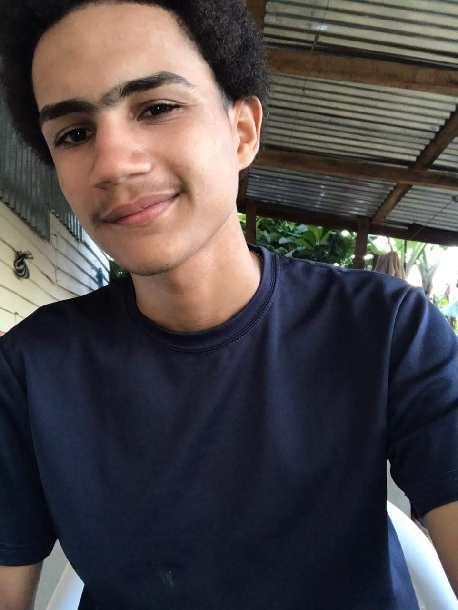

Mi nombre es Jonathan Radelkis Cáceres Cruz.
Nací en Cotuí, prov. Sánchez Ramírez, el 02 de febrero del 2002, desde mi niñez he vivido en la Ceibita perteneciente al municipio de Cotui. Soy hijo de Domingo Cáceres y Juana Mercedes Cruz Santos. Tengo dos hermanas, Carolyn Mercedes Cáceres Cruz y Carina Mercedes Cáceres Cruz. Soy el hijo tercero de una relación de más de 30 años. Estudie en la Escuela Básica Juan Tomás Díaz, luego en el liceo TV centro Juan Tomás Díaz Quezada, actualmente me encuentro estudiando Lic. En Informática en la universidad autónoma de Santo Domingo (UASD).
He cursado y aprobado con éxito los siguientes cursos:
Informática básica - Infotep
Informática – Infotep
Reparación de celulares - Infotep
Reparacion, mantenimiento, configuración y actualización de computadoras – Infotep
